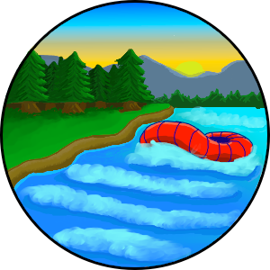

Overview
Purpose
The next major step in building the business is to set up a user-friendly website. The website's main purpose is to attract people to the business and ultimately drive up the popularity of the business and its profits. This will be achieved by giving information about the business: where we are located, what our prices are, trading times and special packages offered. The secondary purpose is to provide information about white water rafting: what white water rafting is, how to get started, what the dangers are and how to stay safe while rafting.
Audience
In assessing the possible target audience, the following factors were taking into account:
- Popularity of outdoor sports within a specific area.
- Costs of service provided vs available income of potential customers.
- Technology access.
From this we can conclude that the primary target audience is:
- Outdoor enthusiast
- Families on holiday
- Seasoned white water rafters
- Beginner white water rafters
- Business get-aways and team building activities
Branding
Website Logo
Style Guide
Color Palette
Palette URL:
https://coolors.co/396e94-e7c24f-a43312-381d2a-aabd8c| Primary | Secondary | Accent 1 | Accent 2 |
|---|---|---|---|
| [#4477b3] | [#d9b207] | [#084e04] |
Typography
Heading Font: Fredoka One
Paragraph Font: Noto Sans JP
Normal paragraph example
The best Whitewater Rafting in Colorado, White Water Rafting Company offers rafting on the Colorado and Roaring Fork Rivers in Glenwood Springs. Since 1974, we have been family owned and operated, rafting the Shoshone section of Glenwood Canyon and beyond.
Colored paragraph example
Trips vary from mild and great for families, to trips exclusively for physically fit and experienced rafters. No matter what type of river adventures you are seeking, White Water Rafting Company can make it happen for you.